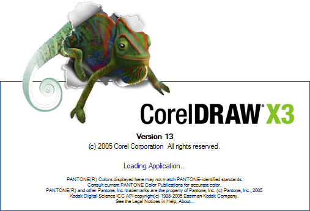

Антология CorelDRAW
Corel Draw – редактор векторной графики, разработанный компанией Corel Corporation, расположенной в Оттаве (Канада). Другое его название Corel Graphics Suite. Самой последней версией на данный момент является версия X4 (14я по счету), которая была выпущена в январе 2008 года.
Поддерживаемые платформы.
CorelDraw была изначально разработана для компании Microsoft Windows. На данный момент программа работает на операционных системах Windows 2000 и выше. Самая последняя версия Х4 (версия 14.0.0.567) была выпущена 23го января 2008 года. Для операционных систем Mac OS и Mac OS X в одно время были разработаны и выпущены специальные версии, но в связи с тем, что они не раскупались, компания прекратила их выпуск. Последняя версия программы для Linux была девятой по счету, и выпустили ее в 2000 году. Но она не была разработана специально под Linux, а представляла собой переработанную версию Wine. Последняя версия для OS X была 11й (выпущена в 2001году). Кроме того, до 5й версии CorelDraw разрабатывался также и для Windows 3.1x и OS/2.
История разработки.
В 1985 году Майкл Коупленд основал Corel, как компанию, нацеленную на разработку систем для верстки печатной продукции для компьютеров на основе процессоров Intel. В 1987 году компания Corel наняла специалистов по разработке программного обеспечения – Майкла Буиллона и Пат Бейрн для разработки программы создания векторных иллюстраций, которая входила бы в пакет программ этих систем для верстки печатной продукции. Такая программа впервые была выпущена в 1989 году и получила название CorelDraw. Программу приняли хорошо, поэтому компания сосредоточилась на выпуске подобного программного обеспечения.
Успех пришел к этой компании вместе с выпуском Windows 3.1. Включение True Type в Windows 3.1 позволило CorelDraw стать уже серьезным графическим редактором, способным использовать системные контурные шрифты (программа включала также и свою собственную систему контурных шрифтов) без помощи дополнительного программного обеспечения, такого как Adobe Type Manager.
Отличительные черты.
Несколько инноваций в векторной графике принято приписывать CorelDraw: инструмент редактирования узлов, который исполняет разные функции в зависимости от объекта, подгонка текста под рамку выделения, быстрый выбор цвета заливки/контура, перспективная проекция, сложная градиентная заливка.
CorelDraw дифференцирует себя от своих конкурентов по нескольким признакам. В первую очередь CorelDraw позиционируется как целый пакет программ для работы с графикой, а не как отдельный графический редактор. Полный набор инструментов для редактирования изображений позволяет пользователю отрегулировать контраст, цветовой баланс, изменить цветовой режим с RGB в CMYK, применить специальные эффекты, например, быстро создать виньетки или рамки для растровых изображений. Специально для работы с растровыми изображениями в пакет входит программа Corel PhotoPaint, которая открывает изображение прямо из CorelDraw, а затем возвращается в программу после сохранения. Она также включает в себя лазер, который позволяет обрезать изображения.
Главными конкурентами CorelDraw являются программы Adobe Illustrator и Xara Xtreme. Несмотря на то, что все это векторные графические редакторы, пользователи разграничивают эти программы. Например, CorelDraw и Xara Xtreme позволяют работать с многостраничными документами напрямую, в то время как Illustrator предлагает только одностраничный вид окна, однако при печати это большое пространство можно будет поделить на несколько страниц. Эти программы могут распознавать типы файлов друг друга, однако чаще всего при этом возникают проблемы разного рода. CorelDraw может открывать файлы Adobe PDF: Adobe PageMaker и InDesign, Microsoft Publisher и Word, а также некоторых других программ. CorelDraw может также открывать презентации, созданные с помощью программы PowerPoint, правда иногда с этим могут возникать некоторые трудности.
Пакет программ CorelDRAW Graphics Suite.
Со временем CorelDraw разрабатывала и добавляла все новые компоненты и инструменты. Список компонентов, входящих в пакет программ, нередко изменяется. Однако есть несколько основных программ, которые сохраняются в этом пакете уже довольно долгое время. PowerTRACE (конвертер растровых изображений в векторные), PHOTO-PAINT (редактор растровой графики) и CAPTURE (утилита, позволяющая делать снимок экрана).
Последняя версия CorelDRAW Graphic Suite X4 (14я по счету) содержит следующие программы:
* CorelDRAW: редактор векторной графики
* Corel PHOTO-PAINT: программа по созданию растровых изображений и их обработке
* Corel CAPTURE: включает несколько вариантов захвата изображений
* Corel PowerTRACE: преобразовывает растровые изображения в векторные (также доступен в самой программе CorelDraw).
* Pixmantec RawShooter Essentials: поддержка файлового формата RAW.
CorelDRAW 1
Изменения по версиям.
CorelDRAW 2
- Ver.2 (1991): инструменты Envelope (для деформации текста или объектов, используя начальную форму), Blend (для трансформации форм), Extrusion (для имитации перспективы и объема в объектах) и Perspective (для деформации объектов по осям Х и Y).
CorelDRAW 3
- Ver.3 (1992): Добавлен Corel PHOTO-PAINT (для обработки растровых изображений), CorelSHOW (для создания презентаций), CorelCHART (для создания графических таблиц), Mosaic и CorelTRACE (для перевода растровых изображений в векторные). Включение этих программ послужило началом создания пакета графических программ.
CorelDRAW 4
- Ver.4 (1993): Включала Corel PHOTO-PAINT (для обработки растровых изображений), CorelSHOW (для создания презентаций), CorelCHART (для создания графических таблиц), CorelMOVE для анимации, Mosaic и CorelTRACE (для перевода растровых изображений в векторные).
CorelDRAW 5
- Ver.5 (1994): Это последняя версия, которая была сделана и работала на Windows 3.x. В пакет также была включена программа Corel Ventura, которая затем продавалась уже отдельно. Это программное обеспечение для работы с разметкой, родственная таким программам, как PageMaker и InDesign.
CorelDRAW 6
- Ver.6 (1995): Это была первая версия, созданная специально для 32-битной Windows. Изменен интерфейс, добавлены инструменты Polygon, Spiral, Knife и Eraser. Кроме того, в пакет вошли Corel Memo, Corel Presents, Corel Motion 3D, Corel Depth, Corel Multimedia Manager, Corel Font Master и Corel DREAM (для трехмерного моделирования).
CorelDRAW 7
- Ver.7 (1997): Контекстно-зависимая панель, предпросмотр печати с масштабированием и опцией панорамирования, Scrapbook (для просмотра перемещенных графических объектов), опции Publish to HTML, Draft and Enhanced display, Interactive Fill и блок проверки грамматических ошибок. Кроме того, пакет включал Corel Scan и Corel Barista (программа для конвертирования документов на языке Java).
CorelDRAW 8
- Ver.8 (1998): Инструменты Digger selection, Docker windows, Interactive Distortion, 3D, Envelope, Realistic Dropshadow и другие. Возможность смешивания цветов, редактор цветовой палитры, поддержка двухцветных изображений, создание документов произвольного размера.
CorelDRAW 9
- Ver.9 (1999): Инструменты Mesh Fill tool (для сложной цветовой заливки), Artistic Media tool. Опция Publish to PDF, встроенные цветовые профили ICC, Multiple On-screen Color Palettes (вкладки цветов) и поддержка Microsoft Visual Basic для приложений. Пакет также включал Canto Cumulus LE, программное обеспечение для управления мультимедийными файлами.
CorelDRAW 10
- Ver.10 (2000): CorelR.A.V.E. (для векторной анимации), инструменты Perfect Shapes и Web graphics (для создания интерактивных элементов, таких как кнопки, например). Функция Page Sorter, поддержка многоязычных документов, окно навигации.
CorelDRAW 11
- Ver.11 (2002): Библиотека символов, редактирование изображений для веб-дизайна, чувствительные к давлению векторные кисти.
CorelDRAW 12
- Ver.12 (2003): Динамические меню и подсказки, инструменты Smart Drawing tools, Virtual Delete tool, возможность экспорта в MS Office и Word, поддержка текста Unicode.
CorelDRAW X3
- Ver.X3 (2006): Инструменты Double click Crop tool (это было первое программное обеспечение, которое позволяло группировать растровые и векторные объекты одновременно), Smart Fill tool, Chamfer/Fillet/Scallop/Emboss tool, Image Adjustment Lab. Trace объединили с Draw, назвав PowerTRACE.

CorelDRAW X4
- Ver.X4 (2008): Опция распознавания шрифта Whatthefont в составе CorelDraw, ConceptShare, инструмент Table tool, отдельные слои, форматирование текста, поддержка файлов RAW.
CorelDRAW X5
Пакет CorelDRAW Graphics Suite X5 ускорил весь дизайнерский процесс благодаря значительным усовершенствованиям в области организации рабочего процесса. Среди новых особенностей этой версии — встроенный органайзер содержимого Corel® CONNECT, новая система управления цветом для более точной цветопередачи, новые возможности многоядерной обработки, расширенная совместимость с форматами файлов, новые функции рисования, например блокировка расположения панелей инструментов, и новые возможности подготовки веб-графики, в том числе веб-анимации. Эта версия была оптимизирована для работы в ОС Windows 7 с поддержкой новых технологий для сенсорных экранов.
Еще несколько деталей.
* Талисманом этого программного обеспечения изначально был мужчина с усами и в шляпе, которого звали Валдо (Waldo). Слово “Waldo” – являлось кодовым названием первой версии программы.
* Первые версии CorelDRAW включали также оригинальные шрифты с расширением .wfn (Waldo fonts – шрифты Валдо).
* Начиная с версии 4, CorelDRAW может быть использован для создания шрифтов True Type. Однако создание кернинга (расстояния между некоторыми парами букв) все же невозможно сделать только средствами этой программы. Более поздние версии CorelDraw позволяют экспортировать также шрифты типа PostScript и OpenType.
* В 1998 году Corel Corporation использовала векторное изображение лица Хеди Ламарр (актриса) в рекламе и на упаковке. Ламарр подала иск на Corel за несанкционированное использование ее портрета и потребовала компенсации. Согласно решению суда, которое было принято в 1999 году, компания Corel обязалась выплатить определенную сумму, в результате чего получала эксклюзивные права на использование этого изображения в течение 5 лет.
* Герои Саус парка (South Park), декорации и реквизит были созданы с помощью CorelDRAW.
* Некоторые версии CorelDRAW/CorelDRAW Graphics Suite были выпущены для Macintosh OS. Последней такой версией была 11.
Добрый день! Огромное спасибо за данную антологию! Очень интересно было почитать...
Не могли бы вы подсказать, существует ли более подробная информация по истории версий Corel Draw? Может быть какие-нибудь ссылки или статьи...Буду вам очень признателен за помощь - очень увлекательный материал))
Voyageur, это все что мне удалось собрать + помогал сам корел, боюсь больше ничего нет...
тут Первая версия CorelDRAW!
Тем не менее спасибо за ваш труд!
Почитал про первую версию...появилась мыль - а есть ли еще где-нибудь в закоулках интернета эта самая первая версия...это же такой раритет, что даже страшно подумать!!!
Voyageur, даже если она и есть, что буде просто невероятно, работать она всеравно не будет ))
Пора дополнить статью!
ух ты! ностальжи...
начинал работать с версии 2.5 для OS/2.
а под виндой с 4.12 - достались разом 3 и 4.12, но кто ж в этом случае будет ставить 3 :)
Самой ранней версий которую видел была 1.2 под windows 3.0 на 286 машинке, но найти и запустить такой раритет достаточно проблематично. Периодически с разной степенью активности пользуюсь версиями начиная с пятой.
Начинающий коллекционер примет в дар версии от 5.0 до десятой
Прочитал, что раньше в составе CorelDRAW был CorelCHART. Жалко, что убрали! В Иллюстраторе есть, а в составе CorelDRAW Graphics Suite так и нет средства для построения диаграмм. И странно, что изначально-то было...
Да много чего убрали. Корел экспериментировал, как я понимаю, включая разные программы в свои версии. Вот чего мне жаль, так то, что CorelScan убрали. В свое время довольно удобно было с ним работать.
Страницы